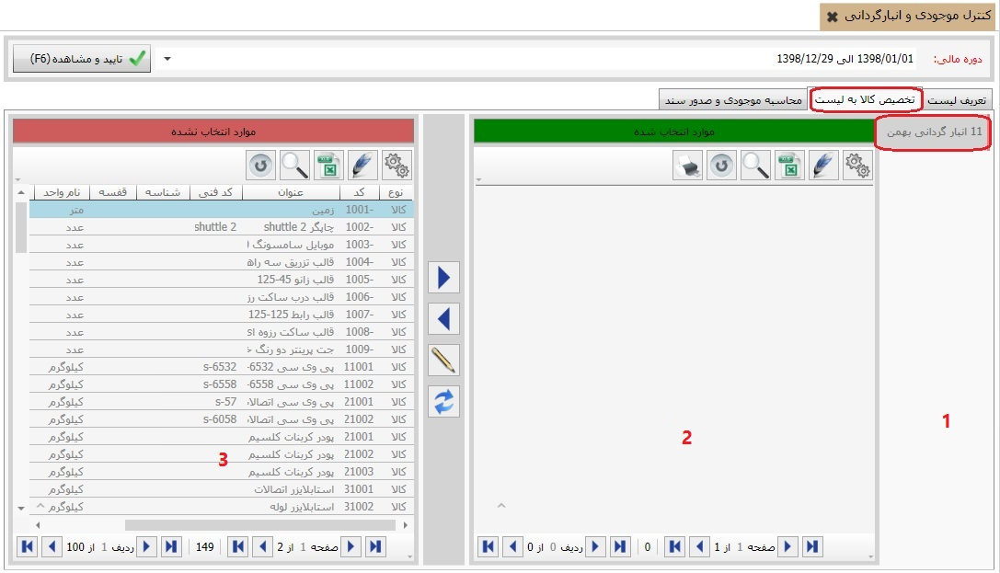
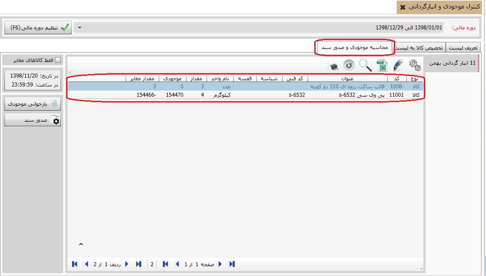
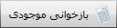

شما نیاز دارید در طول دوره مالیتان بر حسب نیاز عملیات انبارگردانی و مغایرت گیری انبار را انجام دهید. برای انجام این کار از بخش «ابزارهای کاربردی» منوی «کنترل موجودی و انبارگردانی» را انتخاب نمایید تا صفحه مربوط به آن باز شود:

همان طور که مشاهده می کنید، صفحه «کنترل موجودی و انبار گردانی دارای سه تب می باشد که به ترتیب توضیح داده خواهد شد.
در شکل بالا تب «تعریف لیست» انتخاب شده است. در این تب شما می توانید لیست های انبارگردانی تعریف شده را مشاهده نمایید. برای ایجاد لیست انبارگردانی جدید روی گزینه اضافه از نوار ابزار کلیک کنید تا فرم ایجاد لیست باز شود:

در فیلد عنوان نام لیست دلخواه را وارد نمایید.
با انتخاب انبار در فیلد کد انبار تعیین می کنید که عملیات کنترل موجودی و مغایرت گیری روی کدام انبار انجام می شود. سایر فیلد ها را نیز بر اساس نیازتان کامل کنید و با تایید فرم لیست جدید را ایجاد نمایید.
در این قسمت می توانید مقدار کالاهای موجود در انبار را وارد نموده و به لیست انبارگردانی مورد نظرتان اختصاص دهید. شکل زیر تب تخصیص کالا به لیست را نمایش می دهد:

در شکل بالا مشاهده می کنید که صفحه «تخصیص کالا به لیست» شامل سه قسمت است، قسمت
شماره 1 لیست هایی که در تب «تعریف لیست» تعریف کرده اید را نمایش می دهد.
در قسمت شماره 2 لیست کالاهای شمارش شده و تخصیص داده شده به لیست انتخاب
شده از قسمت 1 قرار می گیرد و در قسمت شماره 3 لیست کالاهایی نمایش داده
می شود که به لیست انتخاب شده تخصیص نیافته اند. با استفاده از کلید های
 و
و
 می توانید کالاها را به لیست مورد نظرتان اختصاص دهید یا از تخصیص آن خارج کنید.
می توانید کالاها را به لیست مورد نظرتان اختصاص دهید یا از تخصیص آن خارج کنید.
 : با استفاده از این گزینه می توانید مقدار کالای شمارش شده در قسمت 2 را ویرایش کنید.
: با استفاده از این گزینه می توانید مقدار کالای شمارش شده در قسمت 2 را ویرایش کنید.
در این تب لیست های انبارگردانی تعریف شده در تب «تعریف لیست» را مشاهده می کنید. با انتخاب هر یک از لیست های سمت راست می توانید لیست کالاهای تخصیص داده شده به هر لیست انبارگردانی را همراه با مقدار واقعی و موجودی سیستمی در جدول مقابل مشاهده نمایید. در لیست کالاها فیلد مقدار، مقدار واقعی شمارش شده در انبار و فیلد موجودی مقدار ثبت شده برای آن کالا را در نرم افزار نمایش می دهد. فیلد مقدار مغایر نیز مقدار مغایرت فیلدهای مقدار و موجودی را نمایش می دهد.
اگر عدد فیلد مقدار مغایر برابر با صفر باشد، موجودی انبار و موجودی سیستم مطابقت دارد و نیازی به صدور سند کسری و اضافی نمی باشد.
بعد از وارد کردن مقدار واقعی کالا در تب محاسبه موجودی و صدور سند با استفاده از این کلید می توانید میزان مغایرت کالای مورد نظر خود را مشاهده کنید.

با استفاده از این کلید به صدور و ویرایش سند انبار متصل می شوید و می توانید سند کسر یا اضافه انبار را در آنجا ثبت کنید.